Projekt Koala-away vznikl z náhody, odvahy... a taky z jednoho koalího overalu, který se rozhodl podívat na Island.
O mně
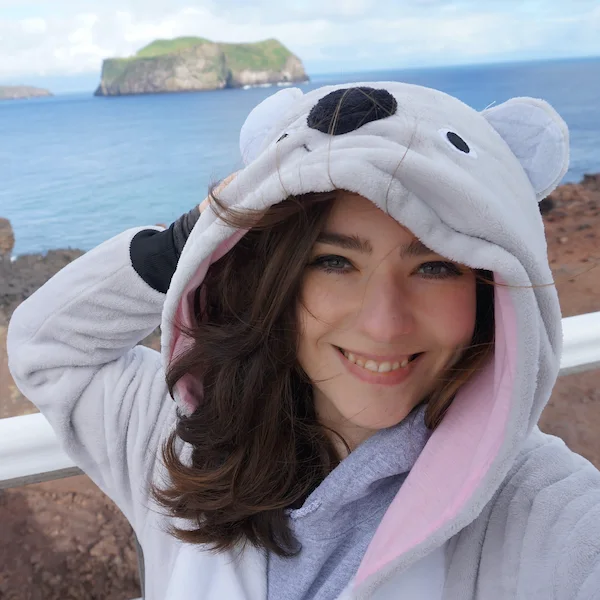
Jmenuji se Magdalena a v roce 2017 jsem si sbalila batoh a 30 kilové zavazadlo a poprvé odletěla na ostrov ohně a ledu.
Po nějaké době jsem si pořídila koalí obleček.
A protože jsem tak trochu ulítlá a ráda dělám věci jinak, začala jsem dělat fotky v koalím overalu na místech,
kde koala rozhodně nemá co dělat: na ledovci, na sopce, u vodopádů.
Nějak mi to sedělo. Já sama jsem se totiž často cítila jako živočišný druh, který nikam úplně nezapadá. Divná. Nepatřičná.
A přitom svobodná a svoje.
Právě Island se mi navždy stal druhým domovem, a zároveň mě donutil vyjít ze své komfortní zóny. Dal mi práci, zkušenosti,
přátele na celý život. Naučil mě věřit si, přestat pít alkohol a postavit se na vlastní nohy.
A taky mi do cesty přišlo spoustu lidí, kterým jsem postupně pomohla odjet za prací do zahraničí:
upravit životopis, napsat motivační dopis, zlepšit angličtinu, dodat odvahu
najít práci nebo se zorientovat v tom, jak Island opravdu funguje. Ti lidé opravdu našli práci a odletěli.
A psali mi, jak jim má malá pomoc změnila život.
Jestli chceš změnu - pomůžu i Tobě.
Island rozhodně není pro každého. Není to pohádka. Ale může to být ta nejlepší věc, kterou pro sebe uděláš.
A já ti s tím ráda pomůžu, tak jako už spoustě lidem před tebou.
„Koala-away. Pomáhám lidem udělat krok za hranice. Upřímně, lidsky a bez růžových brýlí.“
S ČÍM TI POMŮŽU?
On-line poradenství & osobní zkušenosti
- Jak reálně funguje práce a život na Islandu (bez růžových brýlí)
- Co čekat v první týdnech: počasí, kulturu, mentalitu, ubytko, realitu výdělků
- Jak si vybrat region nebo typ práce podle tvé povahy
Hledání práce
- Doporučená strategie, jak hledat efektivně a neplýtvat energií
- Přehled typických pozic pro nováčky i zkušenější
- Přesný postup, jak kontaktovat zaměstnavatele, co psát a čemu se vyhnout
- Seznam ověřených míst/zaměstnavatelů, kde hledat práci (pohostinství, farmy, turistický ruch, rybí továrny,...)
Dokumenty & praktické kroky
- Co si musíš vyřídit ještě před odletem (doklady, letenky, pojištění)
- Co zařídit po příletu (ID číslo tzv. kennitala, bankovní účet, přihlášení trvalého pobytu)
- Reálný checklist k použití
Úprava životopisu a motivačního dopisu
- Profesionální CV „Island-friendly“ styl
- Krátký, výstižný a účinný motivační dopis
- Zvýraznění tvých silných stránek tak, aby tě možný zaměstnavatel chtěl poznat
Angličtina pro pohovory
- Procvičení mluvení (na míru tvému levelu)
- Slovní zásoba a fráze pro hotelnictví, zákaznický servis a turistický ruch
- Simulace pohovoru v angličtině se zpětnou vazbou
Tipy, triky a osobní doporučení
- Jak se připravit na sezónu
- Jak si vybrat pracovní kolektiv
- Jak zvládnout islandské počasí, tmu, samotu a kulturní rozdíly
- Co bych udělala jinak, kdybych začínala dnes
Návrh itineráře cesty
Nechystáš se za prací, ale potřebuješ poradit s itinerářem cesty na poznávací dovolenou? Super! Island mám do hloubky procestovaný křížem krážem a můžu ti slíbit, že o místech, která ti doporučím jen tak nikdo neví. :) Ozvi se mi a já ti s plánováním tripu na Island ráda poradím.
Jak se spojíme?
Můžeš si zvolit formu jakou se se mnou chceš spojit nebo komunikovat. Přes zprávy, call (max. 30 minut)
nebo videohovor (max 45 minut).
V rámci zpětné vazby pak sám/sama vyhodnotíš, jaký to pro tebe mělo smysl, a jestli budeš
chtít, můžeš mě podpořit formou Buy Me a Coffee.
FOTOGALERIE
Na své cesty si většinou beru i foťák. Ráda také experimentuji s různými typy fotoaparátů (např. analog, lomo, polaroid). Díky fotkám si kdykoli můžu připomenout všechny úžasný místa kde jsem byla. Zde je malý výběr těch, na která nejde zapomenout.
 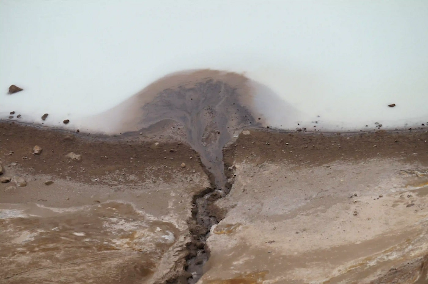
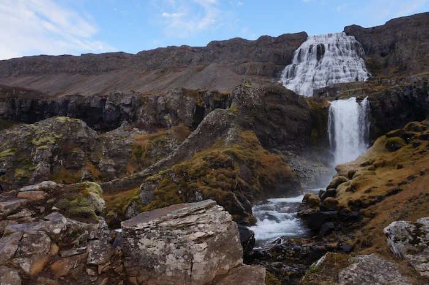
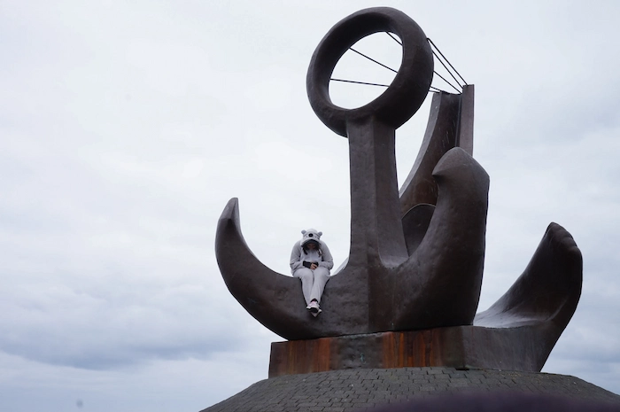
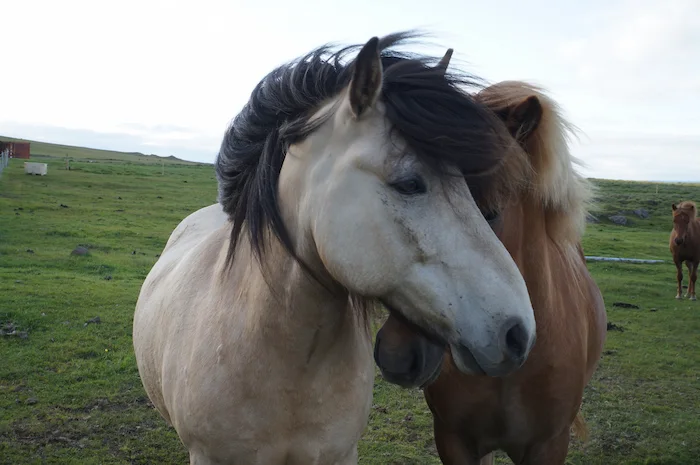
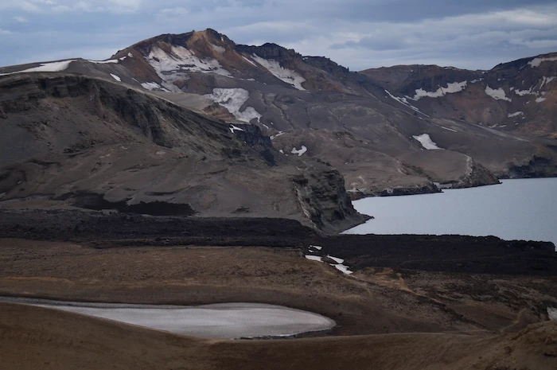
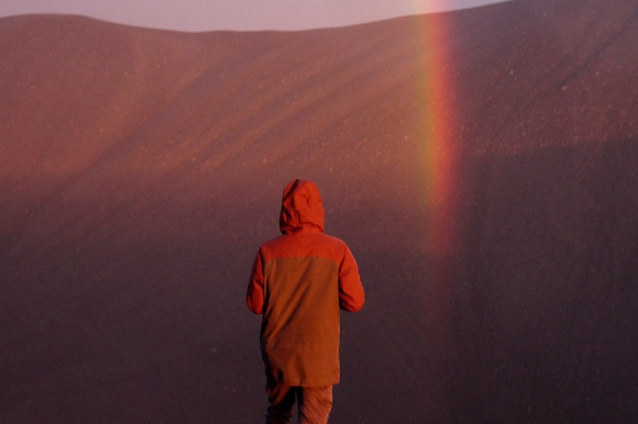
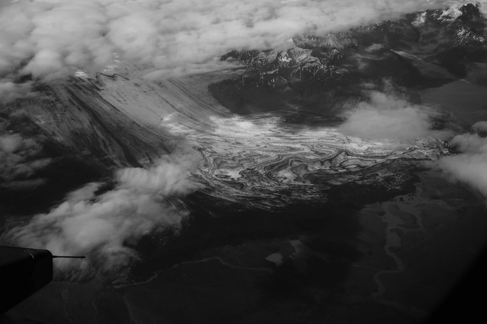
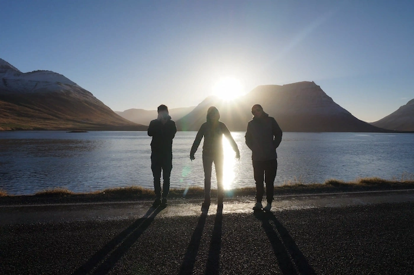
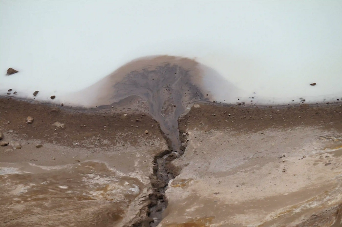
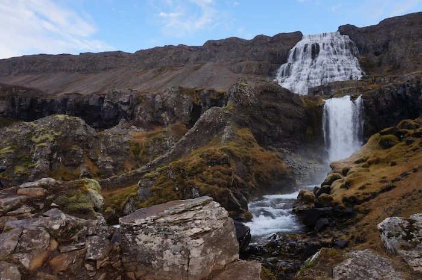
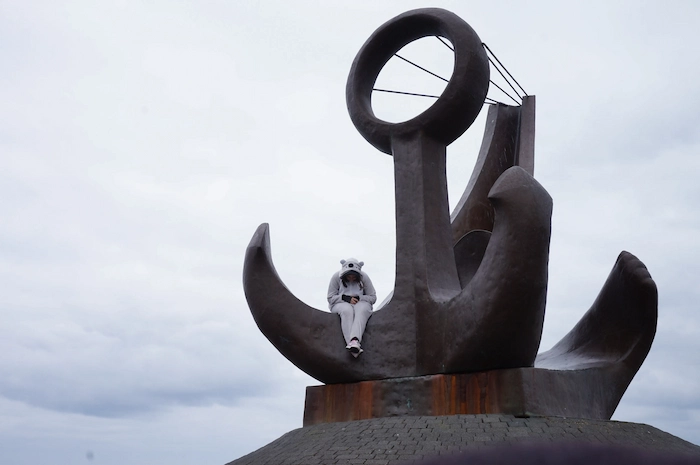
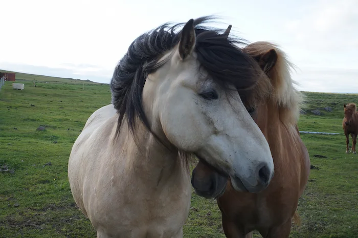
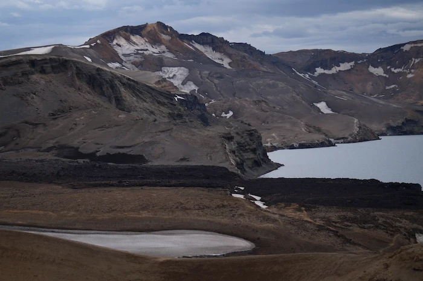
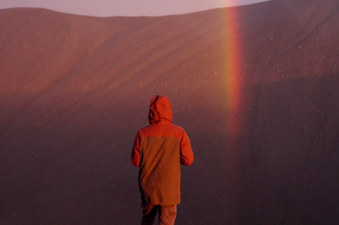
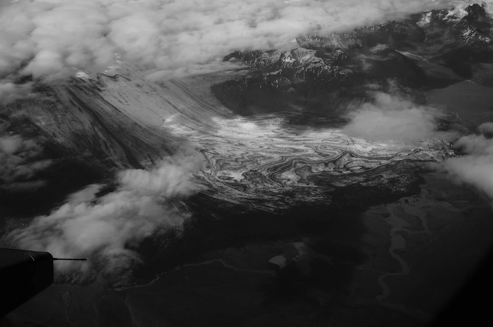
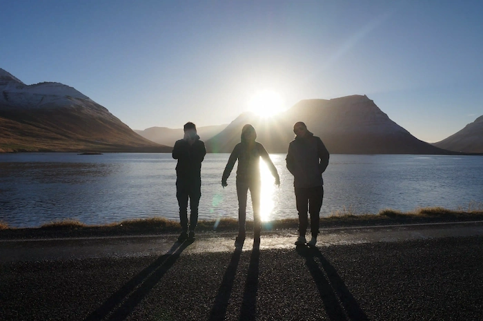
KONTAKT
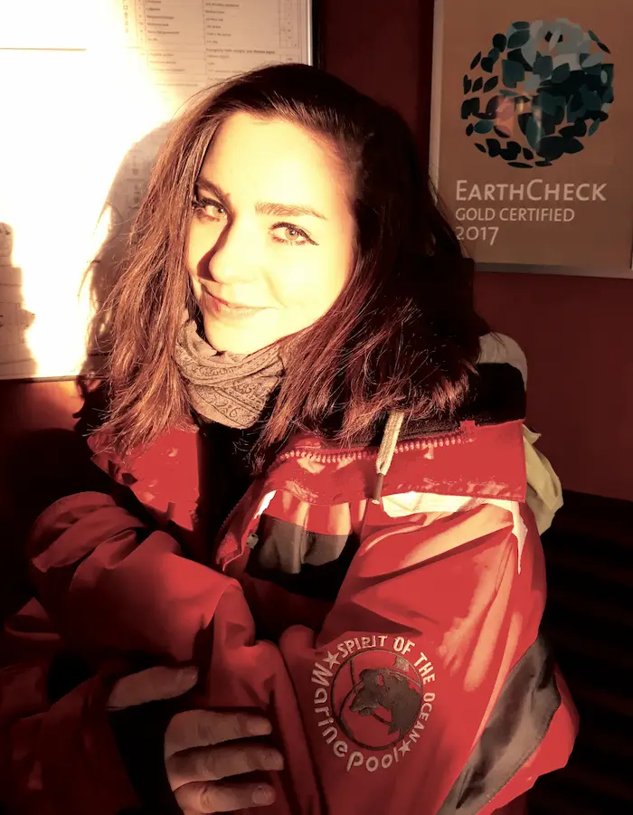
Ráda si povídám. O Islandu, hudbě, prostě o životě. Ráda zajdu do klubu, na výstavu nebo na cestovatelskou přednášku. Pokud máš podobné zájmy, klidně mi napiš na e-mail nebo mi pošli soukromou zprávu na Messenger. Ráda poznám nové lidi. :)
E-mail: magdi.roubalova@gmail.com
Facebook: Magdalena Roubalová
Instagram: @koala_away